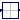

This package contains basic continuous input/output blocks described by differential equations.
All blocks of this package can be initialized in different ways controlled by parameter initType. The possible values of initType are defined in Modelica.Blocks.Types.Init:
| Name | Description |
| Init.NoInit | no initialization (start values are used as guess values with fixed=false) |
| Init.SteadyState | steady state initialization (derivatives of states are zero) |
| Init.InitialState | Initialization with initial states |
| Init.InitialOutput | Initialization with initial outputs (and steady state of the states if possibles) |
For backward compatibility reasons the default of all blocks is Init.NoInit, with the exception of Integrator and LimIntegrator where the default is Init.InitialState (this was the initialization defined in version 2.2 of the Modelica standard library).
In many cases, the most useful initial condition is Init.SteadyState because initial transients are then no longer present. The drawback is that in combination with a non-linear plant, non-linear algebraic equations occur that might be difficult to solve if appropriate guess values for the iteration variables are not provided (i.e. start values with fixed=false). However, it is often already useful to just initialize the linear blocks from the Continuous blocks library in SteadyState. This is uncritical, because only linear algebraic equations occur. If Init.NoInit is set, then the start values for the states are interpreted as guess values and are propagated to the states with fixed=false.
Note, initialization with Init.SteadyState is usually difficult for a block that contains an integrator (Integrator, LimIntegrator, PI, PID, LimPID). This is due to the basic equation of an integrator:
initial equation
der(y) = 0; // Init.SteadyState
equation
der(y) = k*u;
The steady state equation leads to the condition that the input to the integrator is zero. If the input u is already (directly or indirectly) defined by another initial condition, then the initialization problem is singular (has none or infinitely many solutions). This situation occurs often for mechanical systems, where, e.g., u = desiredSpeed - measuredSpeed and since speed is both a state and a derivative, it is always defined by Init.InitialState or Init.SteadyState initializtion.
In such a case, Init.NoInit has to be selected for the integrator and an additional initial equation has to be added to the system to which the integrator is connected. E.g., useful initial conditions for a 1-dim. rotational inertia controlled by a PI controller are that angle, speed, and acceleration of the inertia are zero.
Extends from Modelica.Icons.Library (Icon for library).
| Name | Description |
|---|---|
| Output the integral of the input signal | |
| LimIntegrator | Integrator with limited value of the output |
| Derivative | Approximated derivative block |
| First order transfer function block (= 1 pole) | |
| SecondOrder | Second order transfer function block (= 2 poles) |
| Proportional-Integral controller | |
| PID | PID-controller in additive description form |
| P, PI, PD, and PID controller with limited output, anti-windup compensation and setpoint weighting | |
| Linear transfer function | |
|  StateSpace | Linear state space system |
| Derivative of input (= analytic differentations) | |
| Output the input signal filtered with a low pass Butterworth filter of any order | |
| Output the input signal filtered with an n-th order filter with critical damping |
 Modelica.Blocks.Continuous.Integrator
Modelica.Blocks.Continuous.Integrator
This blocks computes output y (element-wise) as integral of the input u multiplied with the gain k:
k
y = - u
s
It might be difficult to initialize the integrator in steady state. This is discussed in the description of package Continuous.
Extends from Interfaces.SISO (Single Input Single Output continuous control block).
| Name | Description |
|---|---|
| k | Integrator gain |
| Initialization | |
| initType | Type of initialization (1: no init, 2: steady state, 3,4: initial output) |
| y_start | Initial or guess value of output (= state) |
| Name | Description |
|---|---|
| u | Connector of Real input signal |
 Modelica.Blocks.Continuous.LimIntegrator
Modelica.Blocks.Continuous.LimIntegrator
This blocks computes y (element-wise) as integral of the input u multiplied with the gain k. If the integral reaches a given upper or lower limit and the input will drive the integral outside of this bound, the integration is halted and only restarted if the input drives the integral away from the bounds.
It might be difficult to initialize the integrator in steady state. This is discussed in the description of package Continuous.
If parameter limitAtInit = false, the limits of the integrator are removed from the initialization problem which leads to a much simpler equation system. After initialization has been performed, it is checked via an assert whether the output is in the defined limits. For backward compatibility reasons limitAtInit = true. In most cases it is best to use limitAtInit = false.
Extends from Interfaces.SISO (Single Input Single Output continuous control block).
| Name | Description |
|---|---|
| k | Integrator gain |
| outMax | Upper limit of output |
| outMin | Lower limit of output |
| Initialization | |
| initType | Type of initialization (1: no init, 2: steady state, 3/4: initial output) |
| limitsAtInit | = false, if limits are ignored during initializiation (i.e., der(y)=k*u) |
| y_start | Initial or guess value of output (must be in the limits outMin .. outMax) |
| Name | Description |
|---|---|
| u | Connector of Real input signal |
This blocks defines the transfer function between the input u and the output y (element-wise) as approximated derivative:
k * s
y = ------------ * u
T * s + 1
If you would like to be able to change easily between different
transfer functions (FirstOrder, SecondOrder, ... ) by changing
parameters, use the general block TransferFunction instead
and model a derivative block with parameters
b = {k,0}, a = {T, 1}.
If k=0, the block reduces to y=0.
Extends from Interfaces.SISO (Single Input Single Output continuous control block).
| Name | Description |
|---|---|
| k | Gains |
| T | Time constants (T>0 required; T=0 is ideal derivative block) [s] |
| Initialization | |
| initType | Type of initialization (1: no init, 2: steady state, 3: initial state, 4: initial output) |
| x_start | Initial or guess value of state |
| y_start | Initial value of output (= state) |
| Name | Description |
|---|---|
| u | Connector of Real input signal |
| y | Connector of Real output signal |
 Modelica.Blocks.Continuous.FirstOrder
Modelica.Blocks.Continuous.FirstOrder
This blocks defines the transfer function between the input u and the output y (element-wise) as first order system:
k
y = ------------ * u
T * s + 1
If you would like to be able to change easily between different
transfer functions (FirstOrder, SecondOrder, ... ) by changing
parameters, use the general block TransferFunction instead
and model a first order SISO system with parameters
b = {k}, a = {T, 1}.
Example:
parameter: k = 0.3, T = 0.4
results in:
0.3
y = ----------- * u
0.4 s + 1.0
Extends from Interfaces.SISO (Single Input Single Output continuous control block).
| Name | Description |
|---|---|
| k | Gain |
| T | Time Constant [s] |
| Initialization | |
| initType | Type of initialization (1: no init, 2: steady state, 3/4: initial output) |
| y_start | Initial or guess value of output (= state) |
| Name | Description |
|---|---|
| u | Connector of Real input signal |
 Modelica.Blocks.Continuous.SecondOrder
Modelica.Blocks.Continuous.SecondOrder
This blocks defines the transfer function between the input u and the output y (element-wise) as second order system:
k
y = ---------------------------------------- * u
( s / w )^2 + 2*D*( s / w ) + 1
If you would like to be able to change easily between different
transfer functions (FirstOrder, SecondOrder, ... ) by changing
parameters, use the general model class TransferFunction
instead and model a second order SISO system with parameters
b = {k}, a = {1/w^2, 2*D/w, 1}.
Example:
parameter: k = 0.3, w = 0.5, D = 0.4
results in:
0.3
y = ------------------- * u
4.0 s^2 + 1.6 s + 1
Extends from Interfaces.SISO (Single Input Single Output continuous control block).
| Name | Description |
|---|---|
| k | Gain |
| w | Angular frequency |
| D | Damping |
| Initialization | |
| initType | Type of initialization (1: no init, 2: steady state, 3/4: initial output) |
| y_start | Initial or guess value of output (= state) |
| yd_start | Initial or guess value of derivative of output (= state) |
| Name | Description |
|---|---|
| u | Connector of Real input signal |
 Modelica.Blocks.Continuous.PI
Modelica.Blocks.Continuous.PI
This blocks defines the transfer function between the input u and the output y (element-wise) as PI system:
1
y = k * (1 + ---) * u
T*s
T*s + 1
= k * ------- * u
T*s
If you would like to be able to change easily between different
transfer functions (FirstOrder, SecondOrder, ... ) by changing
parameters, use the general model class TransferFunction
instead and model a PI SISO system with parameters
b = {k*T, k}, a = {T, 0}.
Example:
parameter: k = 0.3, T = 0.4
results in:
0.4 s + 1
y = 0.3 ----------- * u
0.4 s
It might be difficult to initialize the PI component in steady state due to the integrator part. This is discussed in the description of package Continuous.
Extends from Interfaces.SISO (Single Input Single Output continuous control block).
| Name | Description |
|---|---|
| k | Gain |
| T | Time Constant (T>0 required) [s] |
| Initialization | |
| initType | Type of initialization (1: no init, 2: steady state, 3: initial state, 4: initial output) |
| x_start | Initial or guess value of state |
| y_start | Initial value of output |
| Name | Description |
|---|---|
| u | Connector of Real input signal |
| y | Connector of Real output signal |
 Modelica.Blocks.Continuous.PID
Modelica.Blocks.Continuous.PID
This is the text-book version of a PID-controller. For a more practically useful PID-controller, use block LimPID.
The PID block can be initialized in different ways controlled by parameter initType. The possible values of initType are defined in Modelica.Blocks.Types.InitPID. This type is identical to Types.Init, with the only exception that the additional option DoNotUse_InitialIntegratorState is added for backward compatibility reasons (= integrator is initialized with InitialState whereas differential part is initialized with NoInit which was the initialization in version 2.2 of the Modelica standard library).
Based on the setting of initType, the integrator (I) and derivative (D) blocks inside the PID controller are initialized according to the following table:
| initType | I.initType | D.initType |
| NoInit | NoInit | NoInit |
| SteadyState | SteadyState | SteadyState |
| InitialState | InitialState | InitialState |
| InitialOutput and initial equation: y = y_start |
NoInit | SteadyState |
| DoNotUse_InitialIntegratorState | InitialState | NoInit |
In many cases, the most useful initial condition is SteadyState because initial transients are then no longer present. If initType = InitPID.SteadyState, then in some cases difficulties might occur. The reason is the equation of the integrator:
der(y) = k*u;
The steady state equation "der(x)=0" leads to the condition that the input u to the integrator is zero. If the input u is already (directly or indirectly) defined by another initial condition, then the initialization problem is singular (has none or infinitely many solutions). This situation occurs often for mechanical systems, where, e.g., u = desiredSpeed - measuredSpeed and since speed is both a state and a derivative, it is natural to initialize it with zero. As sketched this is, however, not possible. The solution is to not initialize u or the variable that is used to compute u by an algebraic equation.
Extends from Interfaces.SISO (Single Input Single Output continuous control block).
| Name | Description |
|---|---|
| k | Gain |
| Ti | Time Constant of Integrator [s] |
| Td | Time Constant of Derivative block [s] |
| Nd | The higher Nd, the more ideal the derivative block |
| Initialization | |
| initType | Type of initialization (1: no init, 2: steady state, 3: initial state, 4: initial output) |
| xi_start | Initial or guess value value for integrator output (= integrator state) |
| xd_start | Initial or guess value for state of derivative block |
| y_start | Initial value of output |
| Name | Description |
|---|---|
| u | Connector of Real input signal |
| y | Connector of Real output signal |
Via parameter controllerType either P, PI, PD, or PID can be selected. If, e.g., PI is selected, all components belonging to the D-part are removed from the block (via conditional declarations). The example model Modelica.Blocks.Examples.PID_Controller demonstrates the usage of this controller. Several practical aspects of PID controller design are incorporated according to chapter 3 of the book:
Besides the additive proportional, integral and derivative part of this controller, the following features are present:
The parameters of the controller can be manually adjusted by performing simulations of the closed loop system (= controller + plant connected together) and using the following strategy:
Initialization
This block can be initialized in different ways controlled by parameter initType. The possible values of initType are defined in Modelica.Blocks.Types.InitPID. This type is identical to Types.Init, with the only exception that the additional option DoNotUse_InitialIntegratorState is added for backward compatibility reasons (= integrator is initialized with InitialState whereas differential part is initialized with NoInit which was the initialization in version 2.2 of the Modelica standard library).
Based on the setting of initType, the integrator (I) and derivative (D) blocks inside the PID controller are initialized according to the following table:
| initType | I.initType | D.initType |
| NoInit | NoInit | NoInit |
| SteadyState | SteadyState | SteadyState |
| InitialState | InitialState | InitialState |
| InitialOutput and initial equation: y = y_start |
NoInit | SteadyState |
| DoNotUse_InitialIntegratorState | InitialState | NoInit |
In many cases, the most useful initial condition is SteadyState because initial transients are then no longer present. If initType = InitPID.SteadyState, then in some cases difficulties might occur. The reason is the equation of the integrator:
der(y) = k*u;
The steady state equation "der(x)=0" leads to the condition that the input u to the integrator is zero. If the input u is already (directly or indirectly) defined by another initial condition, then the initialization problem is singular (has none or infinitely many solutions). This situation occurs often for mechanical systems, where, e.g., u = desiredSpeed - measuredSpeed and since speed is both a state and a derivative, it is natural to initialize it with zero. As sketched this is, however, not possible. The solution is to not initialize u_m or the variable that is used to compute u_m by an algebraic equation.
If parameter limitAtInit = false, the limits at the output of this controller block are removed from the initialization problem which leads to a much simpler equation system. After initialization has been performed, it is checked via an assert whether the output is in the defined limits. For backward compatibility reasons limitAtInit = true. In most cases it is best to use limitAtInit = false.
Extends from Interfaces.SVcontrol (Single-Variable continuous controller).
| Name | Description |
|---|---|
| controllerType | Type of controller |
| k | Gain of controller |
| Ti | Time constant of Integrator block [s] |
| Td | Time constant of Derivative block [s] |
| yMax | Upper limit of output |
| yMin | Lower limit of output |
| wp | Set-point weight for Proportional block (0..1) |
| wd | Set-point weight for Derivative block (0..1) |
| Ni | Ni*Ti is time constant of anti-windup compensation |
| Nd | The higher Nd, the more ideal the derivative block |
| Initialization | |
| initType | Type of initialization (1: no init, 2: steady state, 3: initial state, 4: initial output) |
| limitsAtInit | = false, if limits are ignored during initializiation |
| xi_start | Initial or guess value value for integrator output (= integrator state) |
| xd_start | Initial or guess value for state of derivative block |
| y_start | Initial value of output |
| Name | Description |
|---|---|
| u_s | Connector of setpoint input signal |
| u_m | Connector of measurement input signal |
| y | Connector of actuator output signal |
This block defines the transfer function between the input u and the output y as (nb = dimension of b, na = dimension of a):
b[1]*s^[nb-1] + b[2]*s^[nb-2] + ... + b[nb]
y(s) = --------------------------------------------- * u(s)
a[1]*s^[na-1] + a[2]*s^[na-2] + ... + a[na]
State variables x are defined according to controller canonical form. Internally, vector x is scaled to improve the numerics (the states in versions before version 3.0 of the Modelica Standard Library have been not scaled). This scaling is not visible from the outside of this block because the non-scaled vector x is provided as output signal and the start value is with respect to the non-scaled vector x. Initial values of the states x can be set via parameter x_start.
Example:
TransferFunction g(b = {2,4}, a = {1,3});
results in the following transfer function:
2*s + 4
y = --------- * u
s + 3
Extends from Interfaces.SISO (Single Input Single Output continuous control block).
| Name | Description |
|---|---|
| y = (2*s+3)/(4*s^2+5*s+6)*u is defined as b={2,3}, a={4,5,6} | |
| b[:] | Numerator coefficients of transfer function |
| a[:] | Denominator coefficients of transfer function |
| Initialization | |
| initType | Type of initialization (1: no init, 2: steady state, 3: initial state, 4: initial output) |
| x_start[size(a, 1) - 1] | Initial or guess values of states |
| y_start | Initial value of output (derivatives of y are zero upto nx-1-th derivative) |
| Name | Description |
|---|---|
| u | Connector of Real input signal |
| y | Connector of Real output signal |
The State Space block defines the relation between the input u and the output y in state space form:
der(x) = A * x + B * u
y = C * x + D * u
The input is a vector of length nu, the output is a vector of length ny and nx is the number of states. Accordingly
A has the dimension: A(nx,nx),
B has the dimension: B(nx,nu),
C has the dimension: C(ny,nx),
D has the dimension: D(ny,nu)
Example:
parameter: A = [0.12, 2;3, 1.5]
parameter: B = [2, 7;3, 1]
parameter: C = [0.1, 2]
parameter: D = zeros(ny,nu)
results in the following equations:
[der(x[1])] [0.12 2.00] [x[1]] [2.0 7.0] [u[1]]
[ ] = [ ]*[ ] + [ ]*[ ]
[der(x[2])] [3.00 1.50] [x[2]] [0.1 2.0] [u[2]]
[x[1]] [u[1]]
y[1] = [0.1 2.0] * [ ] + [0 0] * [ ]
[x[2]] [u[2]]
Extends from Interfaces.MIMO (Multiple Input Multiple Output continuous control block).
| Name | Description |
|---|---|
| A[:, size(A, 1)] | Matrix A of state space model (e.g. A=[1, 0; 0, 1]) |
| B[size(A, 1), :] | Matrix B of state space model (e.g. B=[1; 1]) |
| C[:, size(A, 1)] | Matrix C of state space model (e.g. C=[1, 1]) |
| D[size(C, 1), size(B, 2)] | Matrix D of state space model |
| nin | Number of inputs |
| nout | Number of outputs |
| Initialization | |
| initType | Type of initialization (1: no init, 2: steady state, 3: initial state, 4: initial output) |
| x_start[nx] | Initial or guess values of states |
| y_start[ny] | Initial values of outputs (remaining states are in steady state if possible) |
| Name | Description |
|---|---|
| u[nin] | Connector of Real input signals |
| y[nout] | Connector of Real output signals |
Defines that the output y is the derivative of the input u. Note, that Modelica.Blocks.Continuous.Derivative computes the derivative in an approximate sense, where as this block computes the derivative exactly. This requires that the input u is differentiated by the Modelica translator, if this derivative is not yet present in the model.
Extends from Interfaces.SISO (Single Input Single Output continuous control block).
| Name | Description |
|---|---|
| u | Connector of Real input signal |
| y | Connector of Real output signal |
This block defines the transfer function between the input u and the output y as an n-th order low pass filter with Butterworth characteristics and cut-off frequency f. It is implemented as a series of second order filters and a first order filter. Butterworth filters have the feature that the amplitude at the cut-off frequency f is 1/sqrt(2) (= 3 dB), i.e., they are always "normalized". Step responses of the Butterworth filter of different orders are shown in the next figure:

If transients at the simulation start shall be avoided, the filter should be initialized in steady state (e.g., using option initType=Modelica.Blocks.Types.Init.SteadyState).
Extends from Modelica.Blocks.Interfaces.SISO (Single Input Single Output continuous control block).
| Name | Description |
|---|---|
| n | Order of filter |
| f | Cut-off frequency [Hz] |
| Initialization | |
| initType | Type of initialization (1: no init, 2: steady state, 3: initial state, 4: initial output) |
| x1_start[m] | Initial or guess values of states 1 (der(x1)=x2)) |
| x2_start[m] | Initial or guess values of states 2 |
| xr_start | Initial or guess value of real pole for uneven order otherwise dummy |
| y_start | Initial value of output (states are initialized in steady state if possible) |
| Name | Description |
|---|---|
| u | Connector of Real input signal |
| y | Connector of Real output signal |
 Modelica.Blocks.Continuous.CriticalDamping
Modelica.Blocks.Continuous.CriticalDamping
This block defines the transfer function between the input u and the output y as an n-th order filter with critical damping characteristics and cut-off frequency f. It is implemented as a series of first order filters. This filter type is especially useful to filter the input of an inverse model, since the filter does not introduce any transients.
If parameter normalized = true (default), the filter is normalized such that the amplitude of the filter transfer function at the cut-off frequency f is 1/sqrt(2) (= 3 dB). Otherwise, the filter is not normalized, i.e., it is unmodified. A normalized filter is usually much better for applications, since filters of different orders are "comparable", whereas non-normalized filters usually require to adapt the cut-off frequency, when the order of the filter is changed. Figures of the filter step responses are shown below. Note, in versions before version 3.0 of the Modelica Standard library, the CriticalDamping filter was provided only in non-normalzed form.
If transients at the simulation start shall be avoided, the filter should be initialized in steady state (e.g., using option initType=Modelica.Blocks.Types.Init.SteadyState).
The critical damping filter is defined as
α = if normalized then sqrt(2^(1/n) - 1) else 1 // frequency correction factor
ω = 2*π*f/α
1
y = ------------- * u
(s/w + 1)^n


Extends from Modelica.Blocks.Interfaces.SISO (Single Input Single Output continuous control block).
| Name | Description |
|---|---|
| n | Order of filter |
| f | Cut-off frequency [Hz] |
| normalized | = true, if amplitude at f_cut is 3 dB, otherwise unmodified filter |
| Initialization | |
| initType | Type of initialization (1: no init, 2: steady state, 3: initial state, 4: initial output) |
| x_start[n] | Initial or guess values of states |
| y_start | Initial value of output (remaining states are in steady state) |
| Name | Description |
|---|---|
| u | Connector of Real input signal |
| y | Connector of Real output signal |